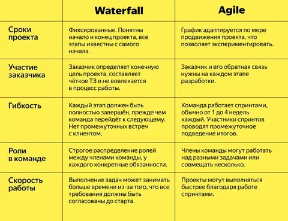

Гибкие и негибкие подходы к разработке ПО
В процессе разработки программного обеспечения используются различные подходы к управлению проектом. Они делятся на негибкие (предсказуемые) и гибкие (адаптивные). Выбор подхода зависит от стабильности требований, объёма проекта, вовлечённости заказчика и других факторов.
🧱 Негибкие (предсказуемые) подходы
Определение:
Это подходы, в которых все стадии проекта строго определены и следуют друг за другом. Требования фиксируются в начале проекта и не меняются в процессе разработки.
🔹 Пример: Waterfall (каскадная модель)
Этапы:
1. Сбор и документирование требований
2. Проектирование архитектуры
3. Реализация (кодирование)
4. Тестирование
5. Внедрение
6. Поддержка
Особенности:
- Чёткое разделение этапов
- Возврат к предыдущему этапу затруднён
- Все требования известны заранее
Преимущества:
- Простота управления
- Хорошо подходит для проектов с чёткими требованиями
- Легче контролировать сроки и бюджет
Недостатки:
- Не гибкий к изменениям
- Поздняя обратная связь от заказчика
- Возможность «сюрпризов» на этапе тестирования
⚡ Гибкие (Agile) подходы
Определение:
Гибкие подходы предполагают итеративную и инкрементальную разработку. Требования могут меняться по ходу проекта. Основной акцент — на сотрудничество, работающий продукт и быструю обратную связь.
🔹 Пример: Scrum
Роли:
- Product Owner — владелец продукта, определяет приоритеты
- Scrum Master — помогает команде соблюдать Scrum
- Команда разработки — реализует задачи
Процесс:
1. Формирование Backlog (список требований)
2. Разработка короткими итерациями (спринтами, 1–4 недели)
3. На каждый спринт выбирается часть задач
4. В конце — демонстрация результата и ретроспектива
Особенности:
- Быстрая поставка ценности
- Обратная связь в каждом спринте
- Требования уточняются по ходу
Преимущества:
- Гибкость и адаптация к изменениям
- Ранний и частый релиз рабочих версий
- Высокая вовлечённость заказчика
Недостатки:
- Сложно предсказать сроки и бюджет заранее
- Требует зрелой команды и дисциплины
- Не всегда подходит для жёстко регламентированных отраслей
🆚 Сравнительная таблица
| Критерий | Waterfall | Scrum (Agile) |
|---|---|---|
| Гибкость требований | Нет, требования фиксируются | Есть, требования адаптируются |
| Фазы разработки | Последовательные | Итеративные |
| Обратная связь | В конце проекта | На каждом спринте |
| Документация | Обширная | Минимально необходимая |
| Подходит для | Предсказуемых проектов | Быстро меняющихся условий |
| Оценка времени и бюджета | Легче спрогнозировать | Труднее спрогнозировать |
| Участие заказчика | Минимальное | Активное |
| Поставляемый результат | Один финальный продукт | Частично готовый продукт каждые 1–4 недели |

📊 Критерии выбора подхода
| Условие | Рекомендуемый подход |
|---|---|
| Требования стабильны и не будут меняться | Waterfall |
| Требования могут измениться в процессе | Agile (Scrum, Kanban) |
| Нужно много документации (гос. проекты) | Waterfall |
| Быстрая обратная связь от клиента важна | Agile |
| В команде есть опыт самоорганизации | Agile |
| Много внешних зависимостей и контрактов | Waterfall |
🧪 Другие гибкие методологии
| Методология | Краткое описание |
|---|---|
| Kanban | Управление задачами на доске, непрерывный поток работы |
| XP (Extreme Programming) | Акцент на качество кода и парное программирование |
| Lean | Сокращение потерь, быстрая доставка ценности |
| SAFe | Масштабируемый Agile для больших организаций |
📚 Рекомендуемые ресурсы
- Agile Manifesto
- Scrum Guide
- PMBOK Guide (Waterfall): от PMI
- Книга «Agile Project Management» — Jim Highsmith
- Книга «Scrum: The Art of Doing Twice the Work in Half the Time» — Jeff Sutherland